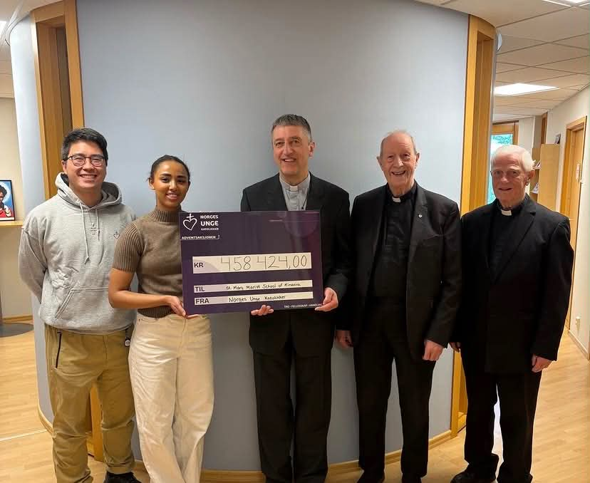

Karitativt Utvalg
Karitativt utvalg er det utvalget i NUK som skal fremme karitativt engasjement og sosial bevissthet i organisasjonen, hovedsakelig gjennom den årlige Adventsaksjonen. Adventsaksjonen er den største aktiviteten vi er ansvarlige for. Dette er en veldedig innsamlingsaksjon til inntekt for et utvalgt prosjekt som organiseres i adventstiden hvert år. Slik styrker vi det sosiale og nestekjærlige engasjementet i NUK. Vi engasjerer NUKs medlemmer og barn og unge i Norge gjennom å spre kunnskap om Kirkens sosiallære og gjennom bevisstgjøring rundt globale spørsmål.
Hva gjør vi?
I lys av utvalgets formål har det følgende faste oppgaver:
Kontaktpersoner
Har du spørsmål om aksjonen? Vi hjelper deg med glede!
Leder
Utvalgsmedlem
Utvalgsmedlem
Bli med
Vi søker hele tiden flere som ønsker å engasjere seg i både Adventsaksjonen og i KUT! Send gjerne en melding dersom du er interessert eller har flere spørsmål!
Ta kontakt med oss på e-post eller telefon, og vi forteller mer om hva det innebærer å være frivillig i Adventsaksjonen.
